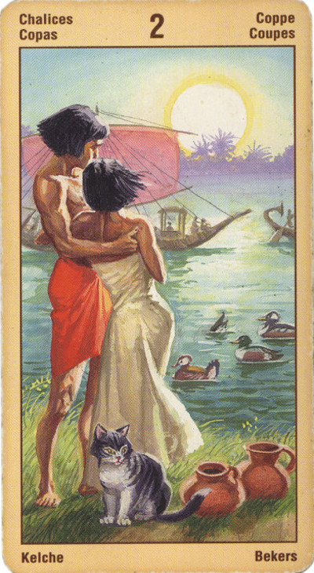

Двойка Кубков
Прямое положение: любовь, страсть, дружба, близость, союз, связь, симпатия, сексуальная связь.
Выпадая в раскладе, эта карта указывает на познание любви и ее могущества. Эта карта не говорит о том, будут ли эти отношения длиться долго, об этом могут рассказать другие карты расклада.
Любовь - это целительная сила, она одновременно несет в себе две противоположности, объединяя их в одно целое. Поэтому, выпадая в раскладе, данная карта может указывать не на отношения как таковые, а на использование могущества любви для исцеления, для плодотворного сотрудничества, для достижения примирения.
Она может означать и теплый прием, гостеприимство, когда мы приезжаем куда-нибудь в незнакомые места, отправляемся в деловую командировку или на переговоры.
Ловушка - соединение с кем-либо ради низших благ (брак по расчету).
Двойка Чаш - явное свидетельство того, что уединение, в котором вы пребывали, закончилось; теперь все ваши чувства и намерения вы волей-неволей будете согласовывать с намерениями любимого человека. Хотите вы того или нет, но и настроение у вас теперь по большей части «общее». Вы и ваш возлюбленный - как сообщающиеся сосуды: повысилось настроение у одного, лучше оно стало и у другого, соответственно - и наоборот...
В перевернутом виде она может указывать на проблемы в развитии взаимоотношений с близким человеком. Эти проблемы могут носить временный характер и в этом случае не рекомендуется делать какие-то выводы или принимать серьезные решения. Однако они могут наблюдаться и постоянно, хотя даже и в этом случае принимать решения, исходя из этих проблем, на данном этапе не рекомендуется. По сути своей любовь и отношения - вещь загадочная, их нужно пережить, независимо от того, в каком направлении они развиваются.
В перевернутом положении карта может означать: неудовлетворенность, желание, влечение, алчность, ревность, похоть, ложные друзья, трудный роман, развод, связь, приносящая одни беспокойства. Появление в раскладе перевернутой двойки кубков может указывать на скандал с супругом, размолвку с любимым человеком, сложности с партнерами, друзьями. Это должно послужить настораживающим сигналом в отношении заключения каких-либо сделок.
Отрицательного значения практически нет.Только временные отсрочки событий.Не любовь, а страсть.Ревность.Перегруженность знакомыми.
неразумность в поведении; напрасные траты и экстравагантность, пьянство. Может также значить прекращение отношений и разрыв.